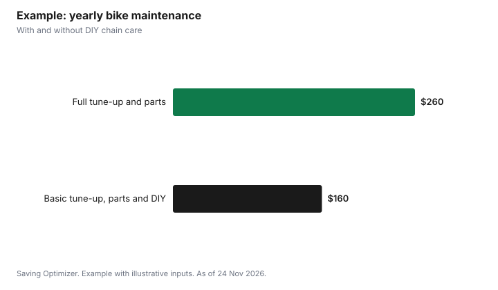

Sports · Canada
Bike Tune-Up Costs: A Canadian Cost Guide

A bike tune-up in Canada typically costs $100 to $280 in labour, plus parts. MEC, for example, lists a basic tune-up at $100, a full tune-up at $180 and a premium overhaul at $280, with parts extra, and offers a free safety inspection to tell you what your bike needs. Choose the tier your riding needs, book before the spring rush, and do the basics yourself between visits.
Key takeaways
- MEC tune-ups: basic $100, full $180, premium overhaul $280; parts not included (checked 24 Nov 2026).
- A free safety inspection at MEC tells you what's needed before you pay.
- Bikes bought at MEC get a year of free adjustments and minor maintenance.
- Book in winter or early spring, before shops get busy.
- Example: a commuter who does basic DIY spends $160 a year instead of $260.
Tune-up tiers
| Tier | Price | When it fits |
|---|---|---|
| Basic tune-up | $100 | After a season of light use |
| Full tune-up | $180 | After a season of regular riding, or wear and dirt |
| Premium overhaul | $280 | Complete teardown and rebuild |
Parts
Chains, cassettes, brake pads, cables, tires and tubes cost extra. Ask for a quote before work starts, and approve any parts above a set amount. Replacing a chain on time protects the more expensive cassette and chainrings.
DIY basics
- Clean and lube the chain every few weeks of riding.
- Check tire pressure weekly.
- Check brake pads for wear.
- Learn to fix a flat.
- Keep the bike dry and indoors in winter if you can.
Plan: an example
A commuter rides most of the year. Without DIY: one full tune-up ($180) and an example $80 of parts, $260. With DIY chain care: one basic tune-up ($100) and an example $60 of parts, $160.

DIY care saves $100 a year in this example. For buying a bike, see buying a used road bike, and for commuting gear, bike commute safety gear.
Sources
- MEC, Bike shop services (tune-up packages, free safety inspection, service agreement), checked 24 Nov 2026.
Frequently asked questions
How much does a bike tune-up cost in Canada?
MEC lists $100 for a basic tune-up, $180 for a full tune-up and $280 for a premium overhaul, with parts extra. Other shops set their own prices.
How often should I tune up my bike?
Usually once a year, or after a season of regular riding.
Are parts included in a tune-up?
Not at MEC. Ask any shop for a quote including parts.
When is the best time to book a tune-up?
Winter or early spring, before the spring rush.
Can I tune up my bike myself?
You can handle basics like chain care, tire pressure and brake pad checks. Leave complex work to a shop.
Researched and drafted with AI assistance and fact-checked against official Canadian sources. How we create content.
Note: Prices are MEC's listed prices; other shops differ. Education only.